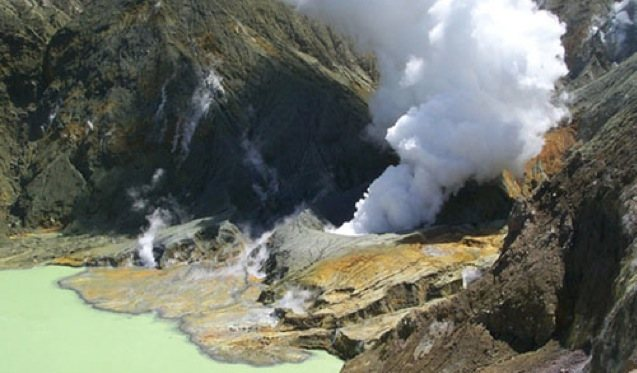
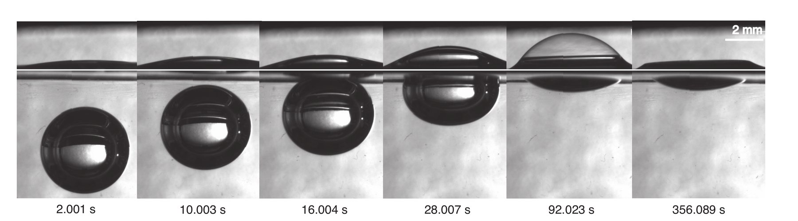
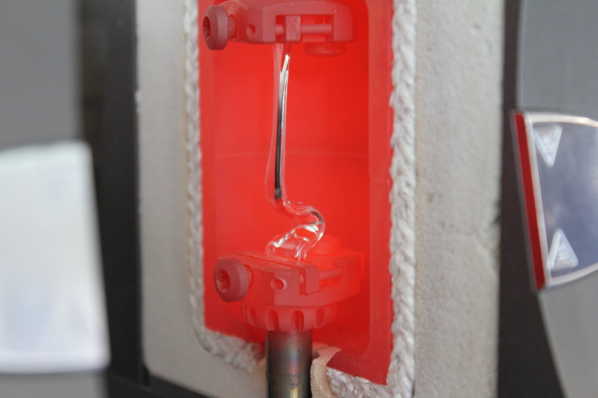
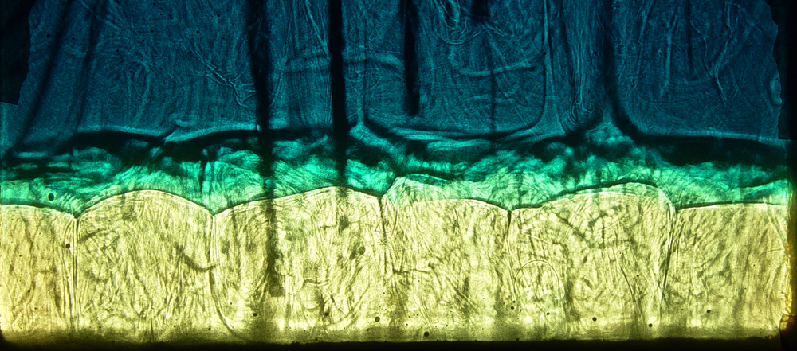
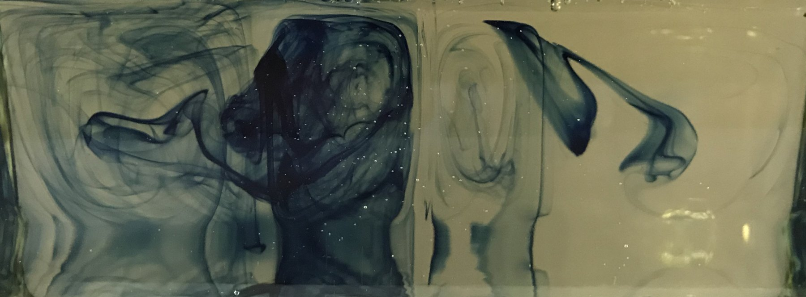

Research


Volcanic eruptions range from the quiet effusion of lava to violent explosions. Our goal is to understand the physical processes that decide between them, from the micro-scale, such as bubble nucleation in magma, to the field scale, such as the flow and accumulation of magma that deforms volcanoes and leads to eruption.
We take three approaches and combine them. We analyze observational data, ranging from vesicles and volatile contents in erupted pyroclasts to geodetic measurements. We design and run laboratory experiments in the Rice Geofluids Lab, including rheometry, decompression experiments, permeability measurements and thermogravimetric analysis. And we integrate observations and experiments through numerical models to gain further insight and to make predictions.
Recent eruptions at Kīlauea
A recent focus of the group is the recent eruptions of Kīlauea volcano, Hawaiʻi. Kīlauea is one of the most active and best-monitored volcanoes on Earth, which makes its eruptions a natural laboratory for testing ideas about how magma is supplied, stored and erupted. We combine observations of these eruptions with models of magma supply, ascent and degassing.
This builds on our earlier work at Kīlauea: the dynamics of Hawaiian-style lava fountains (Stovall et al., 2011), magma flow between the summit and Puʻu ʻŌʻō (Montagna and Gonnermann, 2013), convection in the volcanic conduit (Carey et al., 2013), magma decompression rates during explosive eruptions (Ferguson et al., 2016), and coupling within the magma supply system (Ferrante and Gonnermann, 2026).


Lava fountaining at the summit of Kīlauea: episode 27, 20 June 2025 (left and centre), and at dusk on 11 February 2025 (right). More photos
The 2011–12 eruption of Cordón Caulle
The 2011–12 eruption of Cordón Caulle in southern Chile is a rare example of a rhyolitic eruption observed with modern instruments. It began explosively and then produced an extensive lava flow. During this transition a shallow laccolith was emplaced while magma was simultaneously erupting. Cordón Caulle is a wonderful natural laboratory for studying how silicic magma is stored, how it erupts, and what happens in the years afterwards. We work on it with collaborators at several institutions.
One line of inquiry concerns the eruption itself: together with colleagues we showed that outgassing through fractures enables the effusive eruption of silicic magma (Crozier et al., 2022). Another concerns the magma reservoir. Mafic enclaves in the erupted products give insight into how magma was stored in a crystal mush (Winslow et al., 2022), and motivated by the rapid post-eruptive inflation at Cordón Caulle we modeled the replenishment of the magma chamber from that crystal mush (Phelps et al., 2023).
We are currently studying the shallow hydrothermal system at Cordón Caulle. A monitoring station recorded hot spring temperatures over several years. Creek temperatures show both a seasonal variation and abrupt temperature drops. We are developing a model in which precipitation and snowmelt infiltrate and recharge a shallow, warm aquifer and, at times, produce runoff events, in order to explain the temperature record and what it reveals about the hydrothermal system.


Field work at Cordón Caulle: December 2018 (left and centre) and early 2024 (right, photo by Jong Gil Park). More photos: 2018, 2024
Bubbles in magma
Before they erupt, magmas may contain considerable amounts of dissolved volatiles, mostly water, carbon dioxide and sulfur. As magma ascends, pressure and volatile solubility decrease and gas bubbles form. Because the exsolved volatiles have low density, the density of the magma decreases, providing buoyancy for it to rise to the surface, in some cases very rapidly. The physics of bubble nucleation, growth, coalescence and rupture during ascent largely controls eruptive style and intensity.
We have studied how and when bubbles nucleate in rhyolitic melt through experiments and non-classical nucleation theory (Gonnermann and Gardner, 2013; Hajimirza et al., 2019, 2021, 2022), how long the liquid films between bubbles survive (Nguyen et al., 2013), and when bubbles coalesce into a connected, permeable network (Giachetti et al., 2019). A current question is whether bubble nucleation is a necessary condition for explosive magma fragmentation (Park and Gonnermann, in review).


A strong focus of our current work is developing and applying numerical models that capture the two-phase (vapor–melt) fluid dynamics inherent in volcanic eruptions.
Fragmentation and eruption style
The interplay between bubbles, magma rheology and the fluid dynamics of magma ascent controls the manner in which magma erupts. We work on the conditions under which magma fragments (Gonnermann, 2015), including the fragmentation and Plinian eruption of crystallizing basaltic magma (Moitra et al., 2018), and on what allows magma to erupt effusively instead: the explosive to effusive transition during the 1912 eruption of Novarupta, Alaska (Nguyen et al., 2014) and outgassing through fractures in silicic magma (Crozier et al., 2022).
With collaborators we have constrained how fast magma decompresses during explosive basaltic eruptions, using volatile diffusion in melt embayments and olivine (Lloyd et al., 2014; Ferguson et al., 2016; Barth et al., 2019, 2024). We also study what happens above the vent, including water entrainment in volcanic jets (Hajimirza et al., 2022) and the rheological regimes of pyroclastic density currents (Jones et al., 2024).
Magma properties: rheology, permeability and outgassing
How magma flows, and how easily gas escapes from it, depends on its crystals and bubbles. In the laboratory we have measured the effect of crystal shape and size distribution on magma rheology (Moitra and Gonnermann, 2015) and the viscosity of bubbly magma using torsional experiments on pumice (Ferrante et al., 2025). We have measured how permeability evolves as magma expands and compacts (Gonnermann et al., 2017), and used thermogravimetric analysis to separate magmatic water from water added to volcanic glass after eruption (Giachetti and Gonnermann, 2013; Giachetti et al., 2015).


Magma storage and transport
What governs the long-term evolution and deformation of volcanoes? How does magma accumulate and ascend from the asthenosphere to the surface, and what triggers eruptions? We address these questions by combining geodetic and petrologic observations with models.
In Hawaiʻi, we proposed that Mauna Loa and Kīlauea are coupled by stress transfer in an asthenospheric melt layer (Gonnermann et al., 2012), modeled magma flow between Kīlauea’s summit and Puʻu ʻŌʻō (Montagna and Gonnermann, 2013), and examined coupling and decoupling within Kīlauea’s magma supply system (Ferrante and Gonnermann, 2026). Our work on magma storage at Cordón Caulle, Chile, is described above.
Mantle convection and noble gases
Earlier work addressed the structure and volatile evolution of Earth’s mantle over its 4.5 billion year history, integrating geochemical observations from mid-ocean ridge and ocean island basalts with models of mantle convection. This includes laboratory experiments on mantle plumes and plate-scale flow (Gonnermann et al., 2004), the origin of primordial helium in ocean-island volcanism (Gonnermann and Mukhopadhyay, 2007), the preservation of noble gases in a convecting mantle (Gonnermann and Mukhopadhyay, 2009), and mantle carbon and noble gas contents reconstructed from degassed mid-ocean ridge basalts (Tucker et al., 2018).




Full references are on the Publications page.